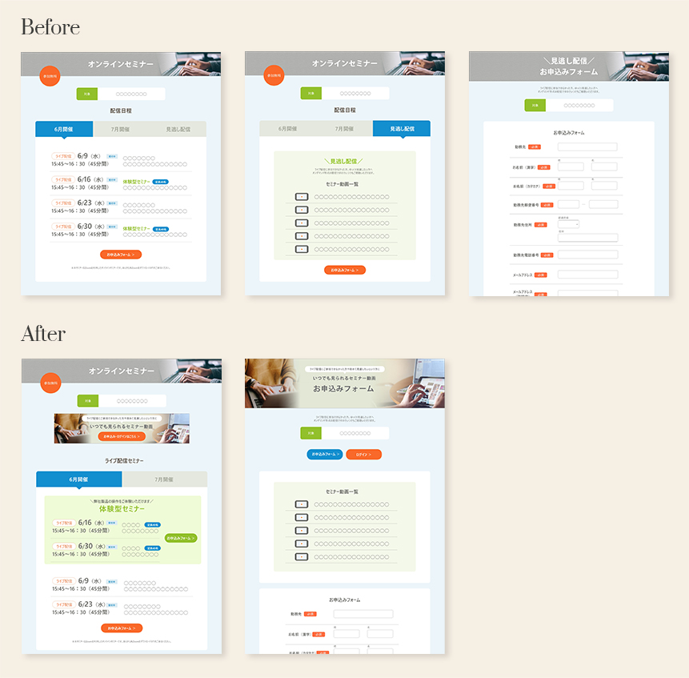

About

和氣 遥香 Haruka Waki
age: 27歳
address: 京都
hobby : 映画・ドラマ鑑賞、宅トレ、パン屋巡り、旅行
初めまして。和氣 遥香と申します。
大学卒業後、保険会社で3年間勤めた後、現在はIT企業にて販促企画の仕事をしております。
主にオンラインセミナーの運営・集客のため、WebページのUI改善やメルマガ作成、データ集計などを担当しております。
現職での経験を通じて、Web画面の見やすさ・操作性が集客の増減に大きく影響することを実感し、Web・UIデザインに興味を持ちました。
作り手としてのスキル・デザインの考え方を身に付けたいと思い、2020年秋よりWebデザインの勉強を開始しました。
―これまでの業務経験から得意とするスキル―
論理的思考力
データを分析し、仮説を立てサービスを改善してきたため、論理的に物事を考えます。美しいだけでなく、目的や課題を分析し、デザインに反映いたします。
校正能力
Web画面やメルマガの校正業務をしているため、細かな作業を迅速に行うことが得意です。可読性、統一性を大切に細部にまでこだわりデザインいたします。
柔軟性
日々チームで仕事をしており、イレギュラー事案が発生した際も、周囲と話し合い解決に導いてきました。Web制作においても、お客様や周囲の声をよく聞き、柔軟な姿勢で何事にも取り組みます。
Works
―UI改善事例―
-

オンラインセミナー申込ページ
※現職で対応した事例を再現したものです。
―Webサイト制作―


※全て学習用に作成した架空のサイトです。